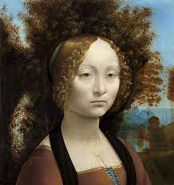

From today's featured article
Salvador Dalí, artist
Salvador Dalí, artist
The Colossus of Rhodes is a 1954 oil painting by the Spanish artist Salvador Dalí (pictured). One of a series of seven paintings created for the 1956 film Seven Wonders of the World, it shows the Colossus of Rhodes, the ancient statue of the Greek titan-god of the sun, Helios. Painted two decades after Dalí's heyday with the surrealist movement, The Colossus of Rhodes is emblematic of his transition from the avant-garde to the mainstream. After financial pressures imposed by his move to the United States in 1940, and influenced by his fascination with Hollywood, he shifted focus away from his earlier exploration of the subconscious and perception, and towards historical and scientific themes. His rendering of the Colossus is heavily influenced by a 1953 presentation by Herbert Maryon, a sculptor and conservator at the British Museum. None of the commissioned paintings were ultimately used for the film, and The Colossus of Rhodes was donated in 1981 to the Kunstmuseum Bern. (Full article...)
Recently featured: Assassination of Talaat PashaGroup (mathematics)Farran Zerbe
ArchiveBy emailMore featured articles
Today's featured picture

Ginevra de' Benci is an oil-on-panel portrait painting by Leonardo da Vinci of the 15th-century Florentine aristocrat Ginevra de' Benci, born circa 1458. It was painted between 1474 and 1478 to commemorate her engagement or wedding. The juniper bush that surrounds her head and fills much of the background is a symbol of female virtue, while the Italian word for juniper, ginepro, is a play on Ginevra's name. The work is in the collection of the National Gallery of Art in Washington, D.C., and is the only painting by Leonardo on public view in the Americas.
Painting credit: Leonardo da Vinci
Wikipedia languages
This Wikipedia is written in English. Many other Wikipedias are available; some of the largest are listed below.
1,000,000+ articles
العربيةDeutschEspañolFrançaisItalianoNederlands日本語PolskiPortuguêsРусскийSvenskaУкраїнськаTiếng Việt中文
250,000+ articles
Bahasa IndonesiaBahasa MelayuBân-lâm-gúБългарскиCatalàČeštinaDanskEsperantoEuskaraفارسیעברית한국어MagyarNorsk BokmålRomânăSrpskiSrpskohrvatskiSuomiTürkçe
50,000+ articles
AsturianuবাংলাBosanskiEestiΕλληνικάSimple EnglishGalegoHrvatskiLatviešuLietuviųമലയാളംМакедонскиNorsk nynorskShqipSlovenčinaSlovenščinaไทย
ABOUT US
Wikipedia is an online free-content encyclopedia helping to create a world where everyone can freely share and access all available knowledge. It is supported by the Wikimedia Foundation and consists of freely editable content. The name "Wikipedia" is a blending of the words wiki (a technology for creating collaborative websites, from the Hawaiian word wiki, meaning "quick") and encyclopedia. Wikipedia's articles provide links to guide readers to related pages with more information.
Wikipedia is written collaboratively by largely anonymous volunteers. Anyone with Internet access and in good standing can write and make changes to Wikipedia articles, except in limited cases where editing is restricted to prevent disruption or vandalism.
Wikipedia has no central editorial board. Contributions are made by a large number of volunteers at their own discretion. Edits are neither the responsibility of the Wikimedia Foundation (the organisation that hosts the site) nor of its staff and edits will not generally be made in response to an email request.The links on the left should direct you to how to contact us or resolve problems. If you cannot find your issue listed there, you can email helpful, experienced volunteers at info-en@wikimedia.org. Please refrain from emailing about disagreements with content; they will not be resolved via email.